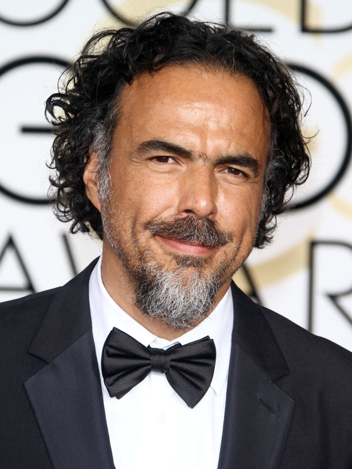

Synopsis
Riggan Thomson is a faded American actor who is famous for playing the superhero Birdman in a film trilogy in the 1990s. He is tormented by the mocking and critical internal voice of Birdman and frequently visualizes himself performing feats of levitation and telekinesis. Riggan is trying to gain recognition as a serious actor for writing, directing, and starring in a Broadway adaptation of Raymond Carver's short story, "What We Talk About When We Talk About Love". Jake, Riggan's best friend and lawyer, is producing the play which co-stars Riggan's girlfriend, Laura, and Broadway débutante Lesley. Riggan daughter Sam, a recovering drug addict with whom he is trying to reconnect, is working as his assistant. The day before the first preview, a light fixture falls onto Riggan's hapless co-star, Ralph. At Lesley's suggestion, Riggan replaces Ralph with her boyfriend, the brilliant but volatile method actor Mike Shiner. The first previews are disastrous: Mike breaks character over the replacement of his gin with water, attempts to rape Lesley during a sex scene, and claims that the prop gun does not look real, which is hindering his performance. Riggan clashes continually with Mike, crescendoing into a fight scene after Riggan reads a New York Times interview with Mike in which he steals Riggan's personal reason for doing a Raymond Carver play. Jake persuades Riggan to continue with the play. Riggan catches Sam using marijuana and berates her; she tells him he is unimportant and that his play is just a vanity project. All the while, the character "Birdman" is talking with Riggan as a voice in his head, judging him and everyone/everything around him. During the final preview, Riggan accidentally locks himself outside with his robe stuck in the fire escape door. He is forced to walk through Times Square in his underwear and enter through the audience to do the final scene. A concerned Sam is waiting in his dressing room after the show. She thinks the performance was very unusual, but interesting. She shows him that the Times Square footage is going viral and explains how this actually helps him. Riggan goes to a bar for a drink and approaches Tabitha Dickinson, a highly influential theater critic. She tells him that she hates ignorant Hollywood celebrities who pretend to be serious actors and promises to "kill" his play with a deprecating review without even having seen it. On the way back, Riggan buys a pint of whiskey, drinks it and passes out on a stoop. The next day, walking to the theater with a severe hangover, he has a conversation with the now visible Birdman, who tries to convince him to quit the play and make a fourth Birdman film. On the street nearby, we see a brief non-sequitur action movie sequence and Birdman, directly addressing the audience, mocks their love of spectacle. Riggan visualizes himself flying through the streets of Manhattan before arriving at the theater. On the opening night, the play is going very well. In his dressing room, a strangely calm Riggan confesses to his ex-wife, Sylvia, that several years ago he attempted to drown himself in the ocean after she caught him having an affair. He also tells her about his inner Birdman voice, which she ignores. After Sylvia wishes him luck and leaves the room, Riggan picks up a real gun, rather than a prop, for the final scene in which his character commits suicide. At the climax, Riggan shoots himself in the head onstage. The play receives a standing ovation as Tabitha stands and leaves. The next day, Riggan wakes up in a hospital with his face covered in a mask of bandages where his nose has been surgically reconstructed after he blew it off during the botched suicide. Sylvia is worried about him, but Jake cannot contain his excitement that the play will run forever after Tabitha's rave review, which called the suicide attempt a new art, "super-realism", and just what American theater needed. Sam visits with flowers, which he cannot smell, and takes a picture of him to scare the skyrocketing number of followers on the Twitter account she has created for him. While she steps outside to find a vase, Riggan goes into the bathroom, removes the bandages revealing his swollen new nose, and obscenely says goodbye to Birdman, seen seated on the toilet. Fascinated by the birds flying outside his room, he opens the window, peers up at them and then climbs out onto the ledge. Sam returns to an empty room and frantically runs to the open window, scanning the ground before slowly looking up into the sky and smiling.
